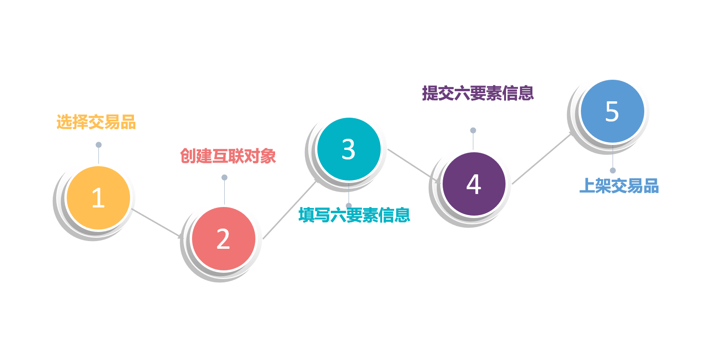
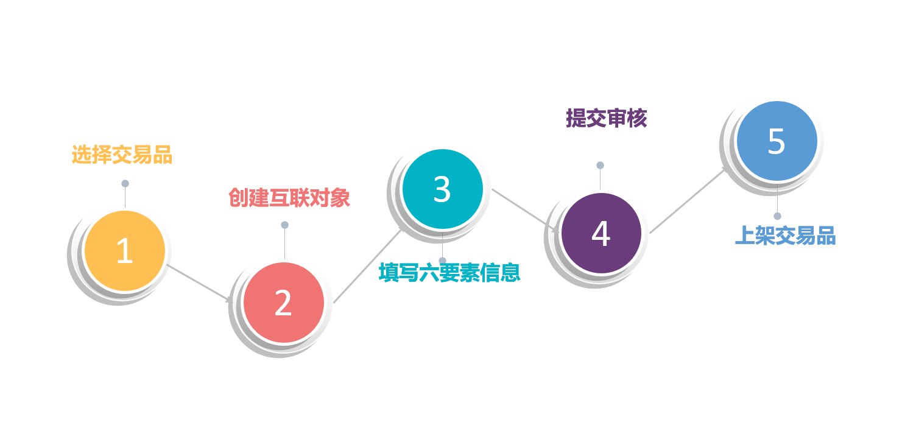
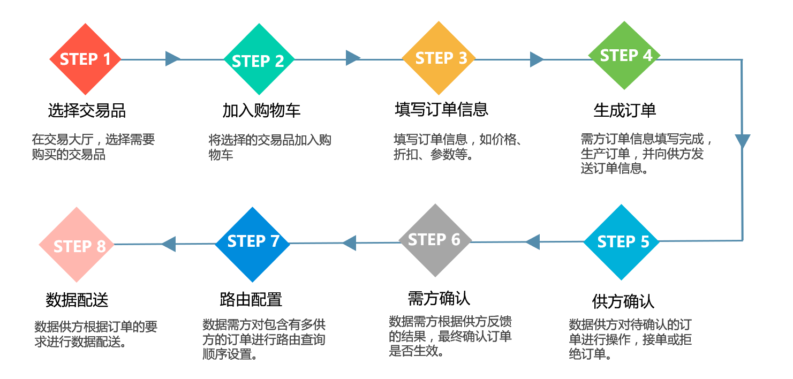

交易品：交易中心定义的可进入交易网络流通的数据产品。交易品 =IKV+参数范围
互联对象：供方在交易品基础之上定义的有能力提供的数据产品，互联对象 =IKV+（供方能够提供的参数范围）
更新频率：数据供方更新数据信息的周期，如7天，30天等
数据留存有效期：数据供方允许需方前置机缓存已购买数据的时间周期
订单有效期：订单从生效到失效的时间期限
结算周期：订单对应结算单结算金额的统计周期
计数方式：指定数据产品计算交易数量的方式，包括查询计数和查得计数
价格类型：数据供方在订单中与需方约定指定互联对象的价格模式，如固定单价、浮动单价等
折扣方式：数据供方给予数据需方的折扣形式，包括固定折扣和阶梯折扣
折扣:数据供方给予需方购买数据产品原价的若干成计价，如九折
保价时间:数据供方承诺数据需方购买指定数据产品时价格不随供方调价影响的时间段
封顶金额：指定订单在结算周期内，所有K值的合计结算金额对应的封顶区间金额
保底金额：指定订单在结算周期内，所有K值的合计结算金额对应的保底区间金额
工单：由一个和多个配送任务组成的配送任务单，主要记录配送对象、路由信息及配送状态
路由方式：
静态路由：数据需方指定供方数据查询顺序
动态路由：数据配送能够根据实际情况的变化适时地调整查询顺序
路由策略：数据需方设定的用于改变路由查询顺序的规则
配送对象：需方与供方最终约定的采购数据对象，是确认参数的互联对象。配送对象=IKV+参数
营销类数据
营销类数据主要面向广告营销场景。供方挂牌包含以下几个步骤：
选择交易品
创建互联对象
填写六要素信息
提交六要素信息
上架交易品

征信类数据
征信类数据主要面向广告营销场景。供方挂牌包含以下几个步骤：
选择交易品
创建互联对象
填写六要素信息
提交审核
上架交易品

数据订购
用户在上海交易中心的数据交易平台进行数据订购，需完成以下几步操作：
选择交易品
加入购物车
填写订单信息
生成订单
供方确认
需方确认
路由配置
数据配送
